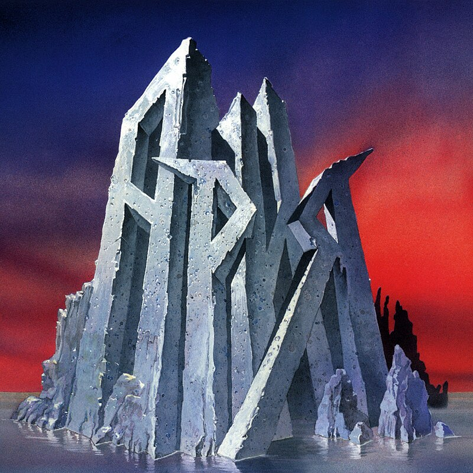

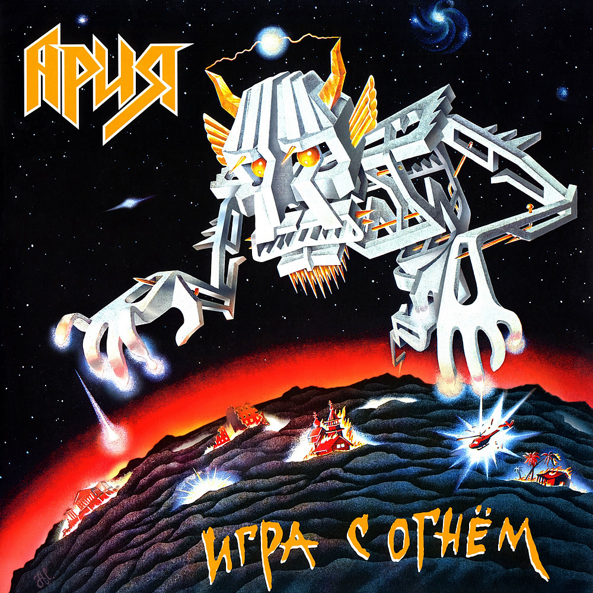
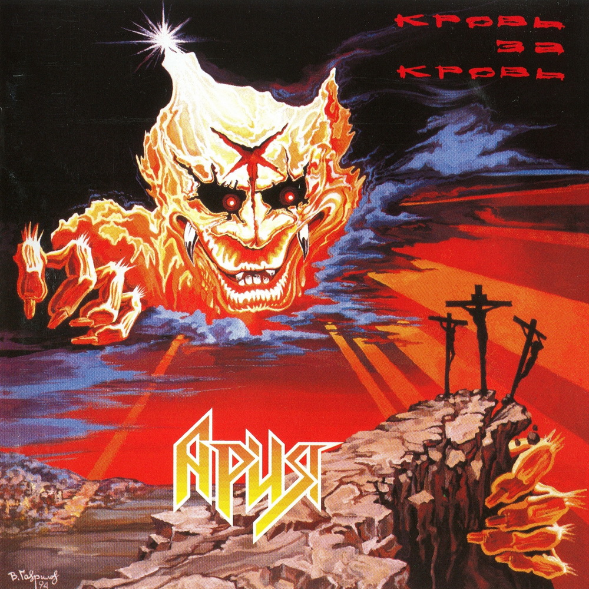
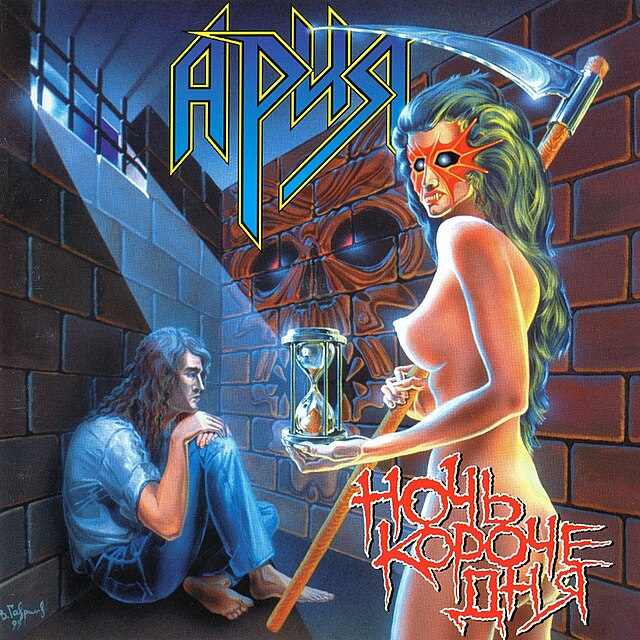


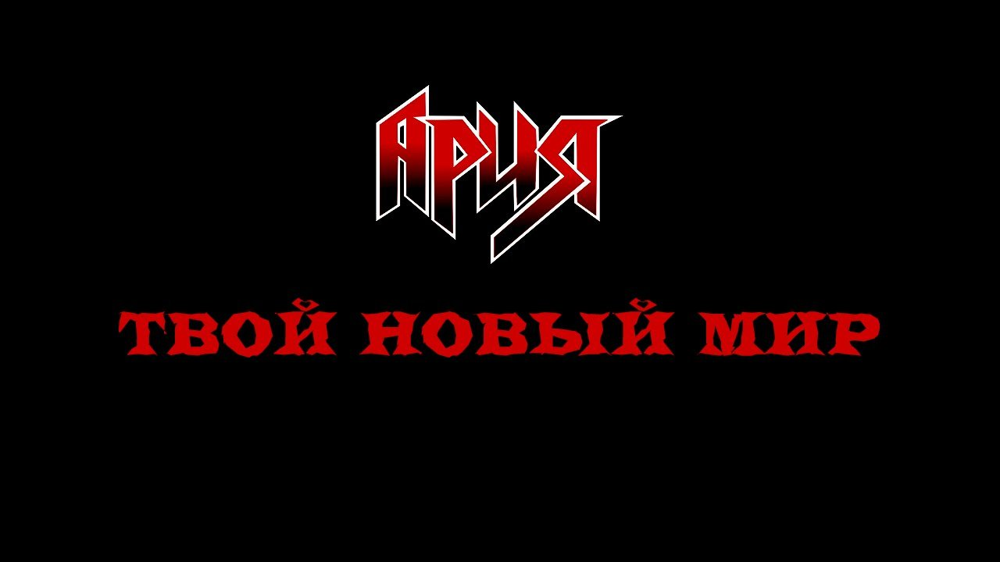
История
Ария - легендарная российская рок-группа, основана в 1985 году в Москве. Основателем коллектива является Владимир Холстинин. С самого начала группа привлекла внимание публики сильными текстами и мелодичной музыкой, они стали одними из лидеров русского рока.
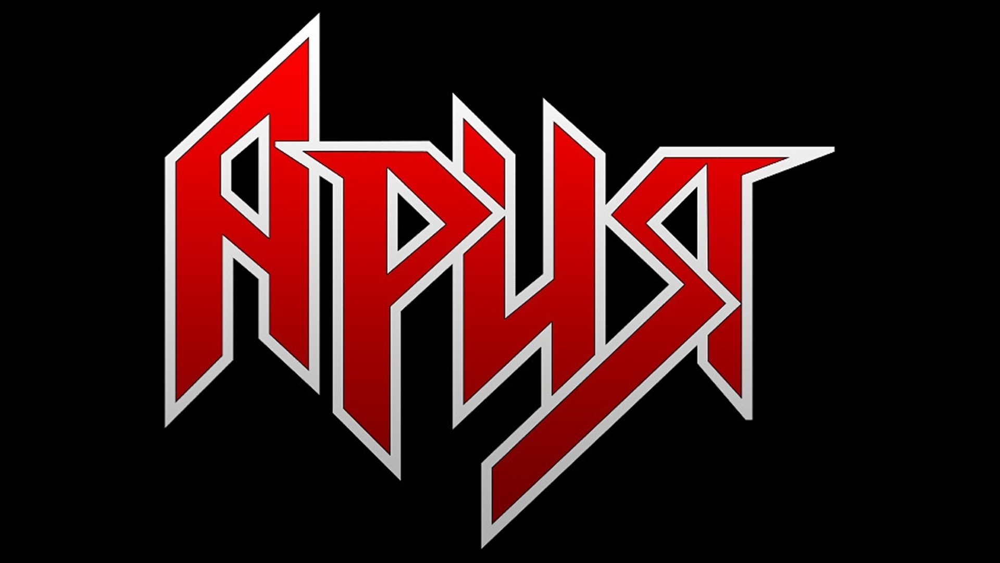История становления
С первых концертов "Арии" группе предрекали успех, и не зря — уже в 1987 году вышел первый альбом «Мания Величия», который сразу же получил популярность. Год от года группа набирала обороты, становясь настоящим феноменом русской музыкальной сцены.
Дискография
Состав группы
|
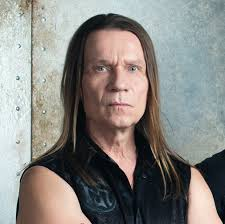 |
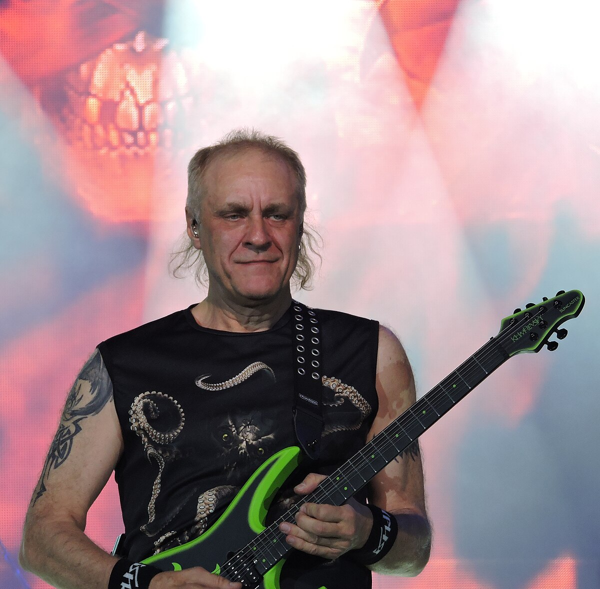 |
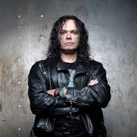 |
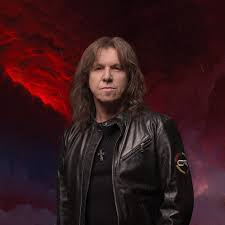 |
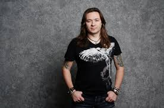 |
Концерты
29 июня - МУРАВЛЕНКО (ЯНАО), Городская сопка